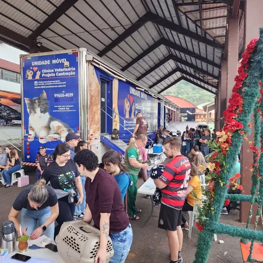

Nossos Projetos Atuais
- Mutirão de Castração: Controle populacional e saúde animal.
- Feira de Adoção: Conectando animais resgatados a famílias amorosas.
- Projeto Amigo Fiel: Arrecadação de ração e medicamentos.
Projetos Futuros
Estamos planejando abrir uma nova clínica veterinária comunitária e ampliar o abrigo para acolher mais animais.